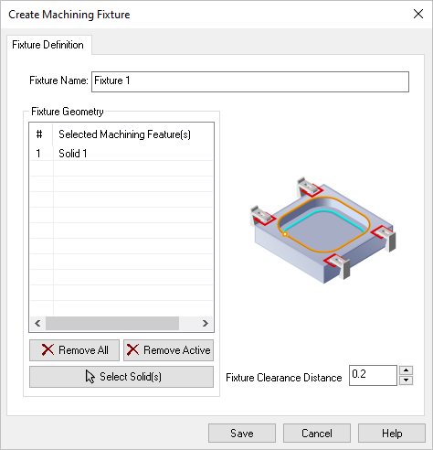
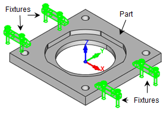

Available in: |
Xpress |
Standard |
Expert |
Professional |
Premium |
If you have a fixture that you would like considered when creating machining operations, you can model the fixture as a 3D solid and then assign it as a Fixture in RhinoCAM. Your fixture geometry can be a simple box or a complete and accurate geometric representation. Be sure to read the following topics on using Fixtures in RhinoCAM.
|
|

Fixtures
Here is some additional information about using Fixture in RhinoCAM. 1.Fixtures can be created/edited. 2.Fixtures can be added to the Machining Job. 3.In 2 Axis methods a 2D silhouette of the fixture profile is considered an Avoid Region. 4.In 3 Axis, all fixture surfaces are considered gouge-free Check Surfaces. The cutting tool will not violate the Fixture geometry. 5.Fixtures are currently not supported in 4 and 5 axis methods. |
Fixtures are defined using the Fixture icon located in your Machining Job tree. If you select and right-click on the Fixture icon the following options are available. Right-click on Fixture to display the following options: •New Fixture: Display the Edit Machining Fixture dialog shown below. •Edit: This also displays the Edit Machining Fixture dialog allowing you to modify your Fixture selections. •Rename: You can change the name of the Fixture. •Delete: Remove the current Fixture definition. |
To create a Fixture, select and then right-click on the Fixture icon in your Machining Job tree and select New Fixture. This will display the following dialog  Edit Machining Fixture Dialog The part model now looks like this. The Fixtures are highlighted:  Fixtures are defined and highlighted in the part Fixture Name Enter a name here for the Fixture. The name will appear to the right of the Fixture icon in your Machining Job tree. Fixture Name Fixture Geometry List This lists the Fixtures you have chosen for this Machining Job. Remove All Pick this button to Remove All items from the Selected List. The actual part geometry is not deleted. Remove Active Pick this button to Remove the currently Active item from the Selected List. The actual part geometry is not deleted. Select Solid(s) Pick this button and then select one or more polysurface solids and then right-click or press <Enter> and they selections will be added to the Selected Machining Features list of the Create Machining Fixture dialog. Fixture Clearance Distance The cutting tool will stay away from any fixture geometry by this distance. |